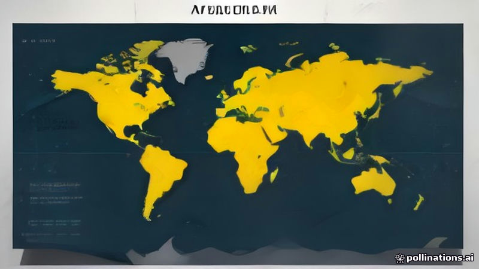

যুক্তরাষ্ট্র, মেক্সিকো ও বোলিভিয়া মেজলস‑মুক্ত অবস্থান হারালো
France 24, DW · 2026-11-17
AI-generated illustrationআন্তর্জাতিক স্বাস্থ্য সংস্থা জানিয়েছে, টিকাদান হ্রাসের ফলে আমেরিকায় মেজলসের দ্রুত বিস্তার ঘটছে।
আন্তর্জাতিক স্বাস্থ্য কর্মকর্তারা মঙ্গলবার জানিয়েছেন যে যুক্তরাষ্ট্র, মেক্সিকো এবং বোলিভিয়া মেজলস‑মুক্ত অবস্থান হারিয়েছে। প্যান আমেরিকান হেলথ অর্গানাইজেশন অনুযায়ী যুক্তরাষ্ট্র ২৬ বছর পর মেজলসের স্বদেশীয় সংক্রমণ থেকে মুক্তি হারিয়েছে।
এই ক্ষতি ঘটে যখন মেজলস ২০২৪ সাল থেকে আমেরিকায় তিন দশকের মধ্যে সর্বোচ্চ গতিতে ছড়িয়ে পড়ছে। যুক্তরাষ্ট্র এবং বিশ্বব্যাপী টিকাদানের হার বিভিন্ন রোগে হ্রাস পেয়েছে, যা রোগের পুনরুত্থানে ভূমিকা রাখছে।
স্বাস্থ্য কর্তৃপক্ষ সতর্ক করেছে যে টিকাদানের হ্রাস রোগের বিস্তার বাড়িয়ে দেয় এবং অঞ্চলে টিকাদান প্রচার পুনরায় জোরদার করার প্রয়োজনীয়তা তুলে ধরেছে।
Written by AI from facts reported by the outlets named above. It may contain errors; check the original reporting.English version
US, Mexico, Bolivia lose measles‑free status as cases surge
International health officials announced on Tuesday that the United States, Mexico and Bolivia have lost their measles‑free status. The Pan American Health Organization said the United States ended a 26‑year period without endemic transmission.
The loss comes as measles is spreading across the Americas at the fastest rate in more than three decades. Vaccination coverage has been declining for several diseases in the United States and worldwide, contributing to the resurgence.
Health authorities warned that the decline in immunisation increases the risk of outbreaks and underscores the need for renewed vaccination efforts across the region.